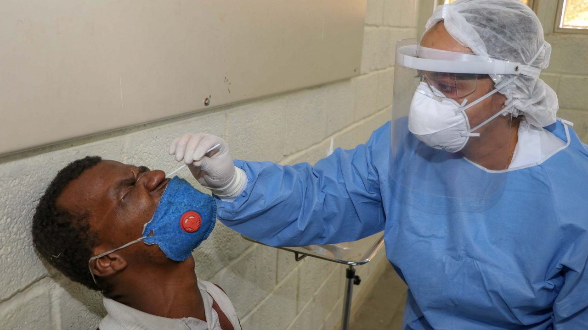
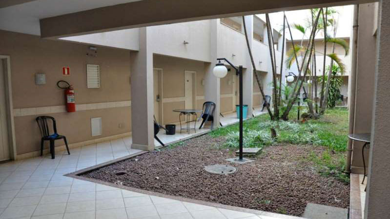

Jornal Contagem
Saúde:

Contagem oferta teste RT-PCR para Covid-19 nas Unidades Básicas de Saúde
Núcleo de estudos da UFMG lança e-book Alimentação saudável muito além do que comemos
Uso de máscara durante exercício físico é imprescindível, afirma professor da UFMG

Hotel para idosos com COVID-19 impede surto em asilos